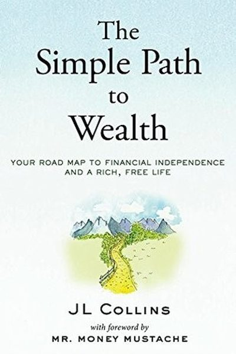

Library › Money & Finance
The Simple Path to Wealth — Summary & Key Lessons

Your road map to financial independence and a rich, free life — the book that became a movement, born from letters to a daughter.
📖 OPEN THE FULL INTERACTIVE BREAKDOWN →🌐 Read it in Hindi, Hinglish, Gujarati, Tamil & 22 more languages — free, with audio.
💡 The Big Idea
JL Collins wrote this book as letters to his daughter — and the letters became the most beloved personal-finance book of the decade. His path is almost insultingly simple: live on less than you earn (the 'gap' is your freedom), invest the gap in total-market index funds (VTSAX is his religion), avoid debt, keep an emergency stash, and let time compound. The book's power isn't novelty — it's the courage to say the boring truth: wealth is simple, not easy, and the simple path works.
🧠 The 5 Key Lessons
Lesson 1: The Gap: Spend Less Than You Earn
The Gap
Wealth doesn't come from income — it comes from the gap between what you earn and what you spend. The bigger the gap, the faster the freedom, regardless of salary. Collins's radical reframe: every rupee you don't spend is a piece of your life you don't sell. Frugality isn't deprivation; it's buying your freedom back.
📖 Example: Collins contrasts the high earner who spends everything (the 'status symbol' treadmill) with the modest earner who keeps half — the second reaches financial independence first, every time. The gap, not the income, is the variable that matters. Read the full example →
⚡ Do this: Calculate your gap this month: income minus spending. If it's under 20%, pick ONE expense to cut — and route the saving straight into investments, not a wallet.
Lesson 2: Invest in the Whole Market, Not Single Stocks
Investing
Collins's investing doctrine: own the entire market through a single total-market index fund (like VTSAX). No individual stocks, no sector bets, no picking winners — because you can't pick winners, and you don't need to. The whole market has never failed to grow over any 20-year period in US history; individual stocks fail all the time.
📖 Example: Collins's favorite framing: owning one share of a total-market fund is owning a sliver of every public company — you can't lose to the market because you ARE the market. Meanwhile, single-stock investors face permanent loss when their pick dies. Read the full example →
⚡ Do this: If you hold individual stocks, keep them as a small 'play money' slice (5% max) — and move the serious money into a broad index fund.
Lesson 3: Debt Is a Chain — Especially Consumer Debt
Debt
Collins is nearly religious on debt: it's the emergency brake on your wealth train. Credit card debt at 30%+ interest is an emergency — you cannot out-invest it, so pay it off before investing anything beyond your employer match. His rule for big purchases: if you can't pay cash, you can't afford it — the only exception is a reasonable mortgage.
📖 Example: The book's math: paying 28% credit card interest is like earning 28% guaranteed on a 'payoff investment' — the best guaranteed return you'll ever get, and tax-free. No index fund comes close. Read the full example →
⚡ Do this: List every debt with its interest rate. Pay minimums on all, but pour every extra rupee into the highest-rate debt until it's gone. Then never carry a balance again.
Lesson 4: The 4% Rule: Your Freedom Number
The 4% Rule
Collins's destination: financial independence = 25× your annual spending, because historically you can safely withdraw 4% of a stock-heavy portfolio per year forever. The rule turns wealth into a number you can compute: want ₹30,000/month? You need ₹90 lakh invested. Want ₹1 lakh/month? You need ₹3 crore. Now the goal is concrete, not mystical.
📖 Example: Collins walks through the math: at a 4% withdrawal rate, the portfolio historically survived every 30-year period in US history — even those starting at market tops — because stocks grow faster than withdrawals over time. Read the full example →
⚡ Do this: Compute your freedom number: yearly spending × 25. Write it on your wall. Every investment decision now has a target to serve.
Lesson 5: Ignore the Noise: The Market Is a Crooked Friend
The Market
Collins's metaphor for the stock market: a rich but crazy friend who sometimes screams at you to sell and sometimes throws money at you. The only winning behavior is to ignore his moods: keep buying through crashes (they're sales), never sell in panic, and understand that volatility is the price of admission, not a reason to leave.
📖 Example: Collins's daughter's first crash: the market fell 40% in 2008–09 — and she kept investing through it, buying at bargain prices. By the recovery, her early investments had multiplied. The panickers who sold at the bottom locked in their losses forever. Read the full example →
⚡ Do this: Write your investment policy in one sentence: 'I invest monthly in index funds and never sell because of news.' Tape it where you check your portfolio.
✅ 5-Step Action Plan
- Measure your gap; cut one expense and invest the saving.
- Move serious money to a total-market index fund.
- Pay off high-interest debt with everything extra — it's the best guaranteed return.
- Compute your freedom number (spending × 25) and display it.
- Write your one-sentence investment policy; tape it near your portfolio.
💬 Best Quotes from The Simple Path to Wealth
- “The simple path to wealth is to spend less than you earn and invest the surplus.”
- “Financial freedom is not about money; it's about having options.”
- “Don't do something. Just stand there.”
Interactive version: mark lessons as read, listen in your language, share quote cards.